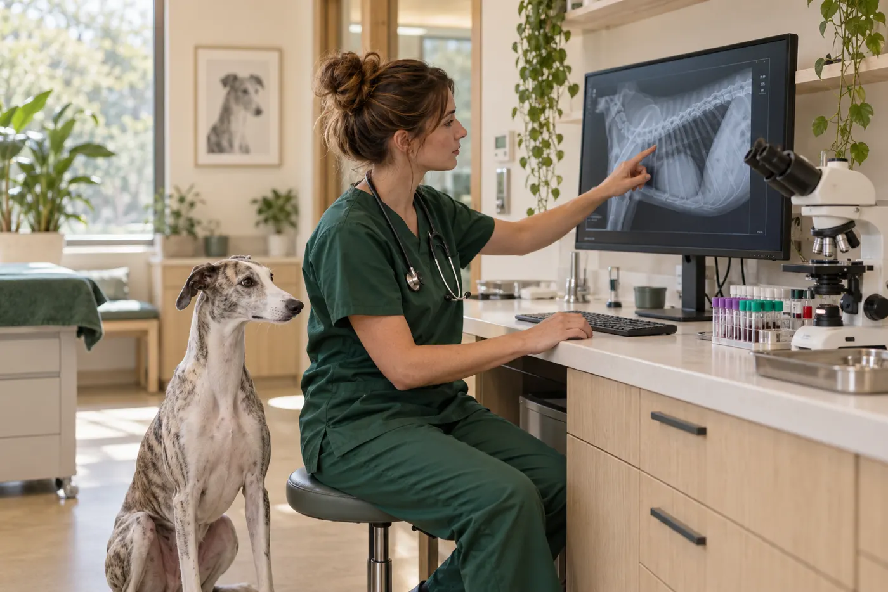
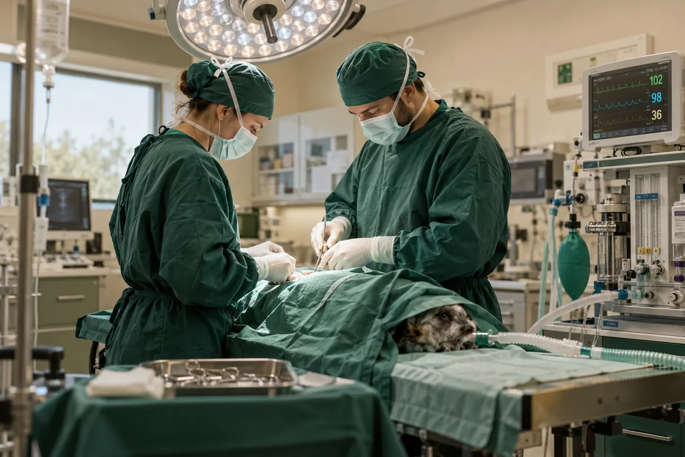
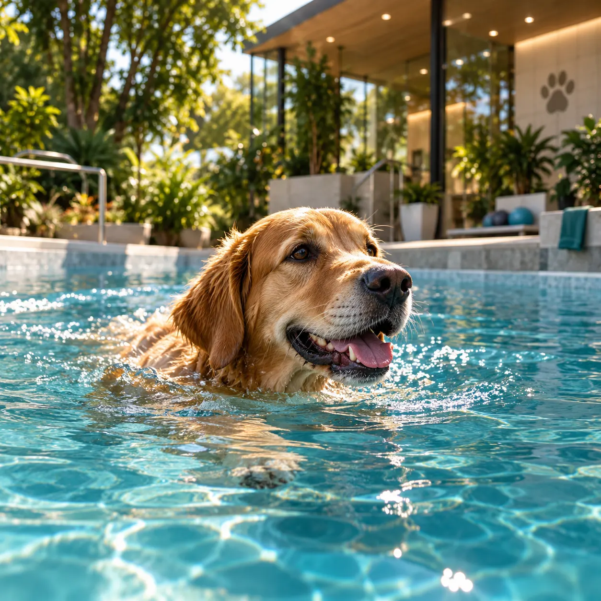
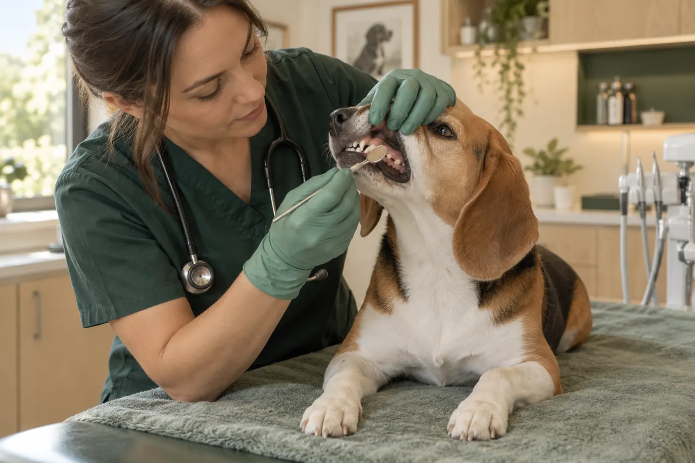
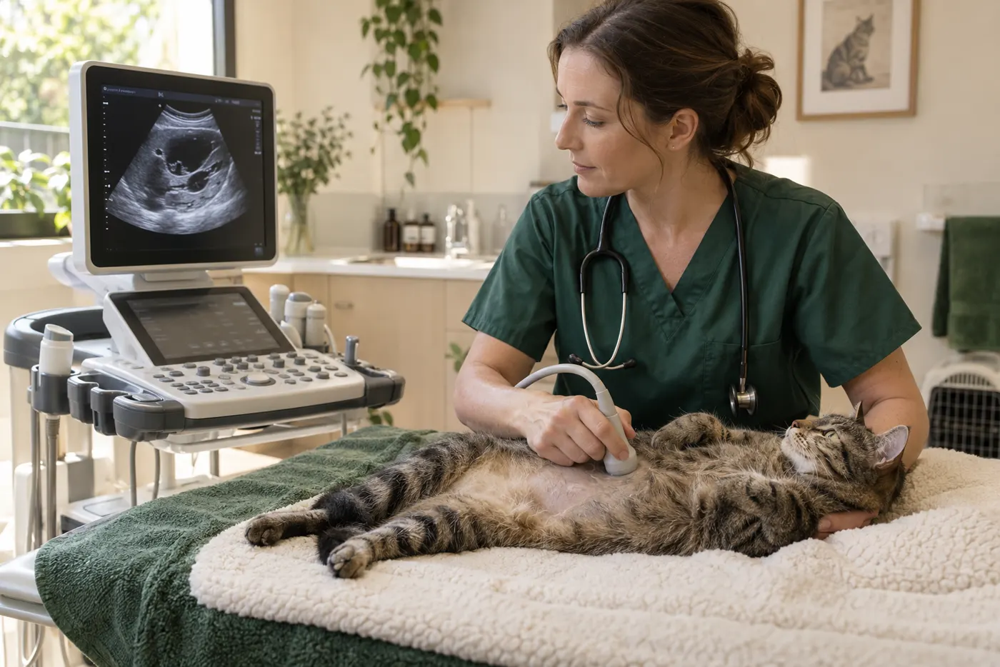
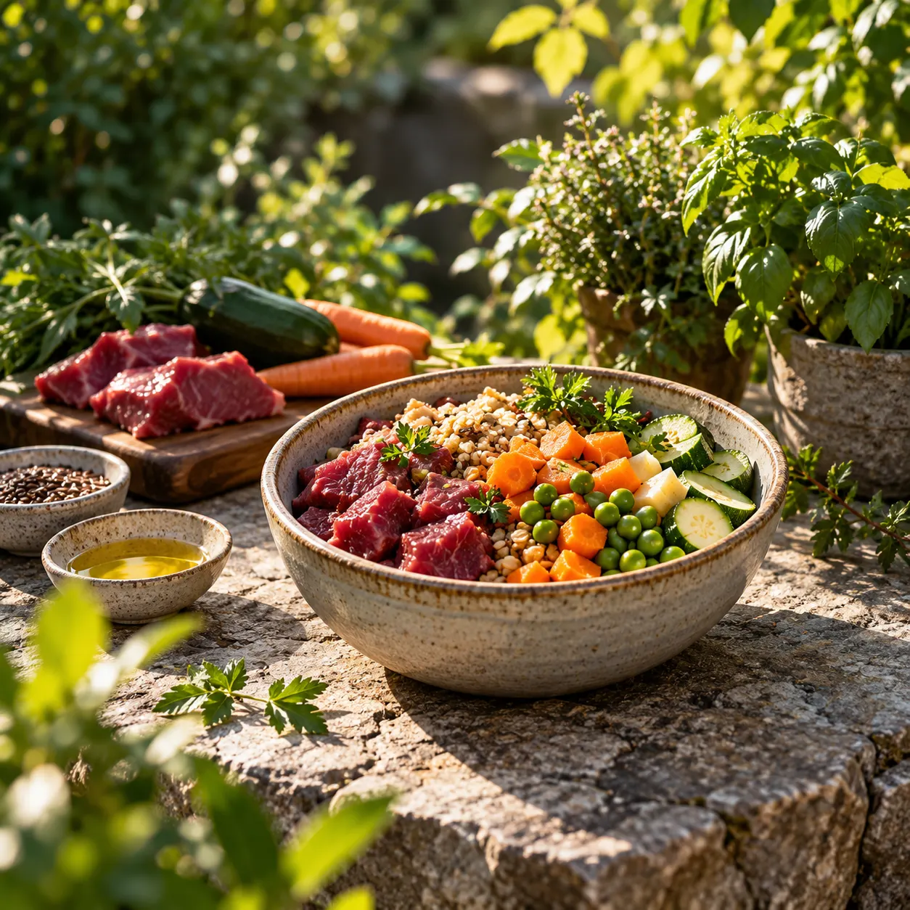
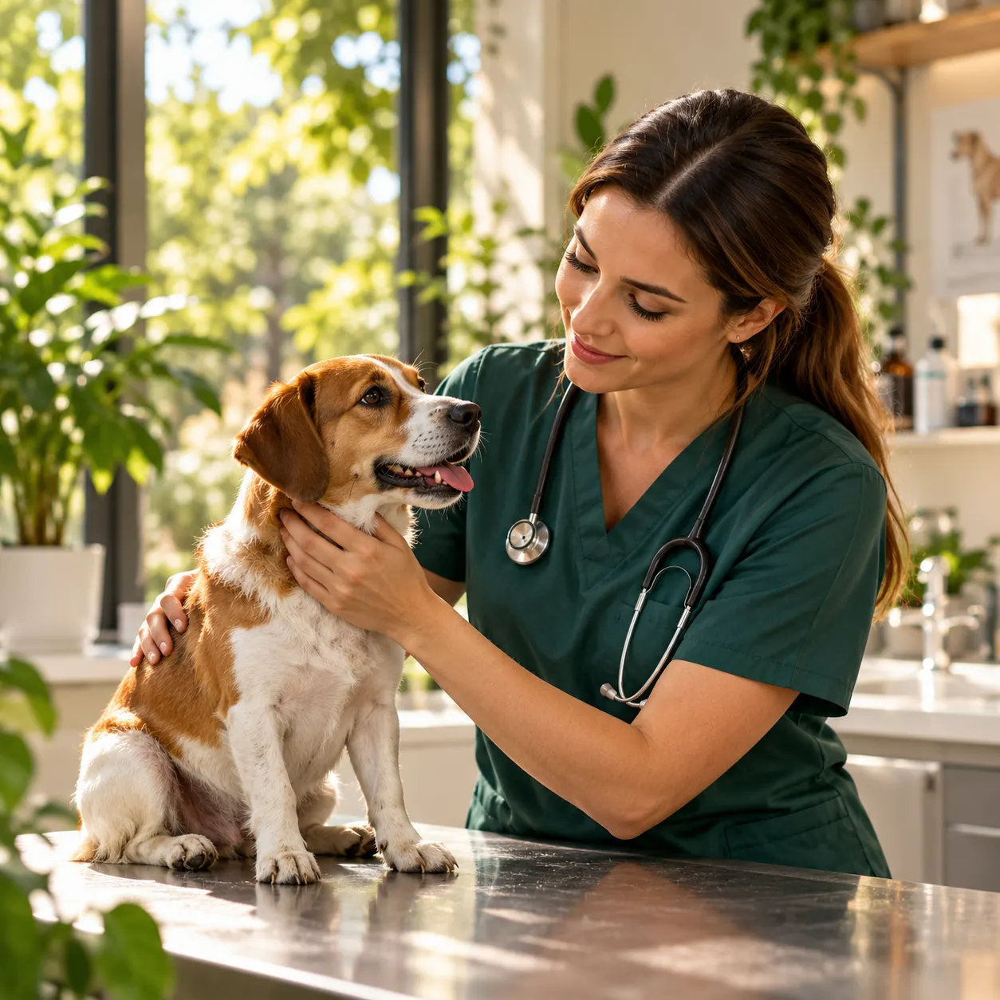

Prevence
Očkování, preventivní prohlídky, odčervení.
Komplexní veterinární péče inspirovaná přírodou.
Spojujeme moderní medicínu
s respektem k přírodě a přirozeným
potřebám zvířat.
Očkování, preventivní prohlídky, odčervení.

Moderní zobrazovací metody a laboratorní vyšetření.

Měkkotkáňové a ortopedické zákroky, anestezie.

Fyzioterapie, hydroterapie, léčebný pohyb.

Profesionální čištění zubů a stomatologie.

Léčba chronických a akutních onemocnění.

Individuální výživové plány pro psy, kočky i koně.

Poradenství pro zodpovědné a udržitelné chovatelství.